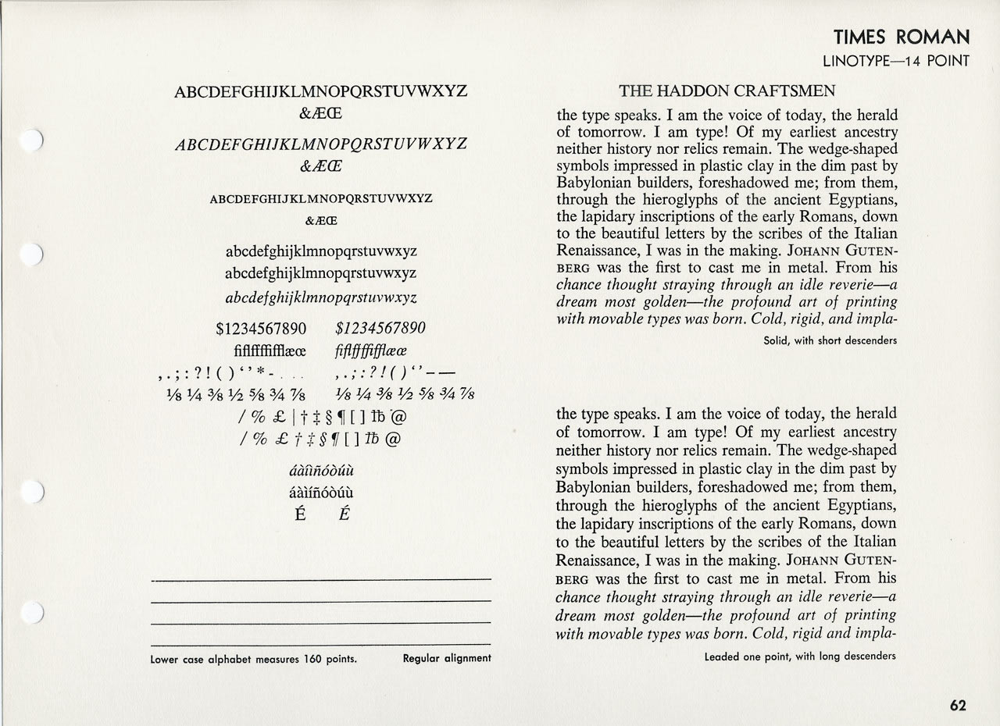
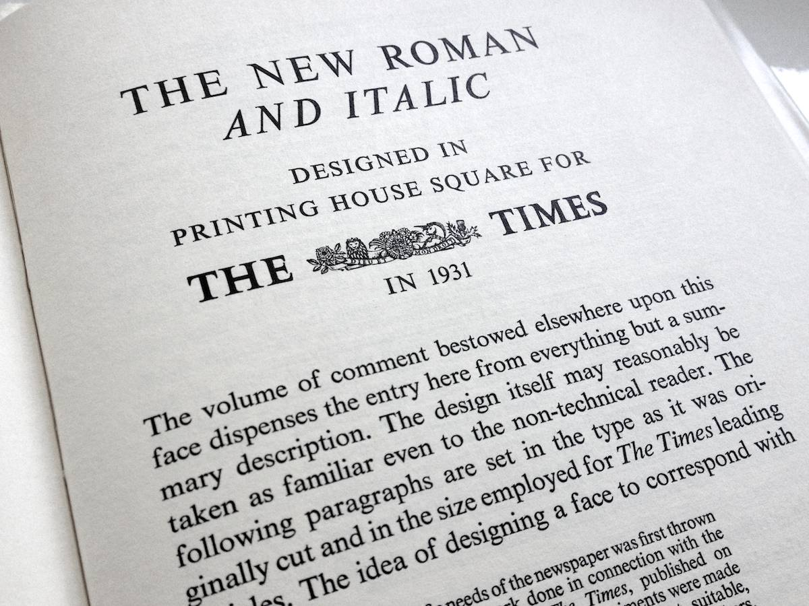

A Brief History of
Times New Roman

Times New Roman gets its name from the Times of London, the British newspaper. In 1929, the Times hired typographer Stanley Morison of Monotype, a British font foundry, to create a new text font. Morison led the project and supervised Victor Lardent, an advertising artist for the Times, who drew the letterforms.
After Monotype completed Times New Roman, it had to license the design to then-rival Linotype, because the Times
Meanwhile, typesetting technology has evolved, but due to its enduring popularity, Times New Roman has always been one of the first fonts available in each new format. This, in turn, has only increased its reach. In 1984, Apple licensed Times Roman for the Macintosh; in 1992, Microsoft licensed Times New Roman for Windows. This put the font into the hands of millions of new users. The number of documents set in Times New Roman exploded.
As a work of design, it’s hard to complain about Times New Roman. It was created for a newspaper, so it’s a bit narrower than most text fonts—especially the bold style. (Newspapers prefer narrow fonts because they fit more text per line.) The italic is mediocre. But those aren’t fatal flaws. Times New Roman is a workhorse font that’s been successful for a reason.
Yet it’s an open question whether its longevity is attributable to its quality or merely to its ubiquity. Helvetica still inspires enough affection to have been the subject of a 2007 documentary feature. Times New Roman, meanwhile, has not attracted similar acts of homage.
If you have a choice about using Times New Roman, please stop. Use something else. See font recommendations for other options.
Did you make your business cards and letterhead at your local copy shop? No, you didn’t, because you didn’t want them to look shoddy and cheap. If you cared enough to avoid the copy shop, then you care enough to avoid Times New Roman. Times New Roman connotes apathy. You are not apathetic.

The origin of the Times New Roman design has always been a bit mysterious. Stanley Morison was certainly familiar with 16th-century French typographer Robert Granjon, whose work has been said to be a starting point for Times New Roman.
But its more direct ancestor is probably Plantin, another Monotype font, designed in 1914 by Frank Pierpont. Plantin was also based on Granjon’s work. Seen side by side, the resemblance is unmistakable: Times New Roman is a taller, brighter version of Plantin.
Or is it? Typographer Mike Parker discovered that in the early 1900s—before Times New Roman or Plantin existed—Boston yacht builder William Starling Burgess drew samples of a new font and sent them to Monotype’s U.S. affiliate. Burgess lost interest in the project, but his drawings were never returned. Parker theorizes that years later, Burgess’s drawings were passed along to Morison, who used them as the basis of Times New Roman.
Parker’s theory is based in part on his examination of Burgess’s drawings, which are archived at the Smithsonian. Parker created a new font family from these drawings—and the result is uncannily similar to Times New Roman. In honor of Burgess, Parker named the font Starling.
Parker’s theory is controversial among some font historians because it implies that Morison appropriated someone else’s work without credit. But these criticisms are a little silly. Just about every font design is the product of new ideas mixed with old ideas—some acknowledged, some not. As with any creative endeavor, the line between acceptable influence and unethical appropriation is often subjective.
Moreover, as time passes and memories fade, it’s increasingly unlikely that the parentage of Times New Roman will ever be conclusively determined.
These days, writers and other font users can choose from numerous Times New Roman alternatives that share its essential flavor but avoid its shortcomings (including one I designed, called Equity). If you’re a diehard fan of Times New Roman, consider them.
- Stanley Morison had a sense of humor about the criticisms lobbed at Times New Roman. In his typographic memoir,
A Tally of Types , Morison imagined what William Morris (mentioned in page layout) might have said about it: “ As a new face it should, by the grace of God and the art of man, have been broad and open, generous and ample; instead, by the vice of Mammon and the misery of the machine, it is bigoted and narrow, mean and puritan.”